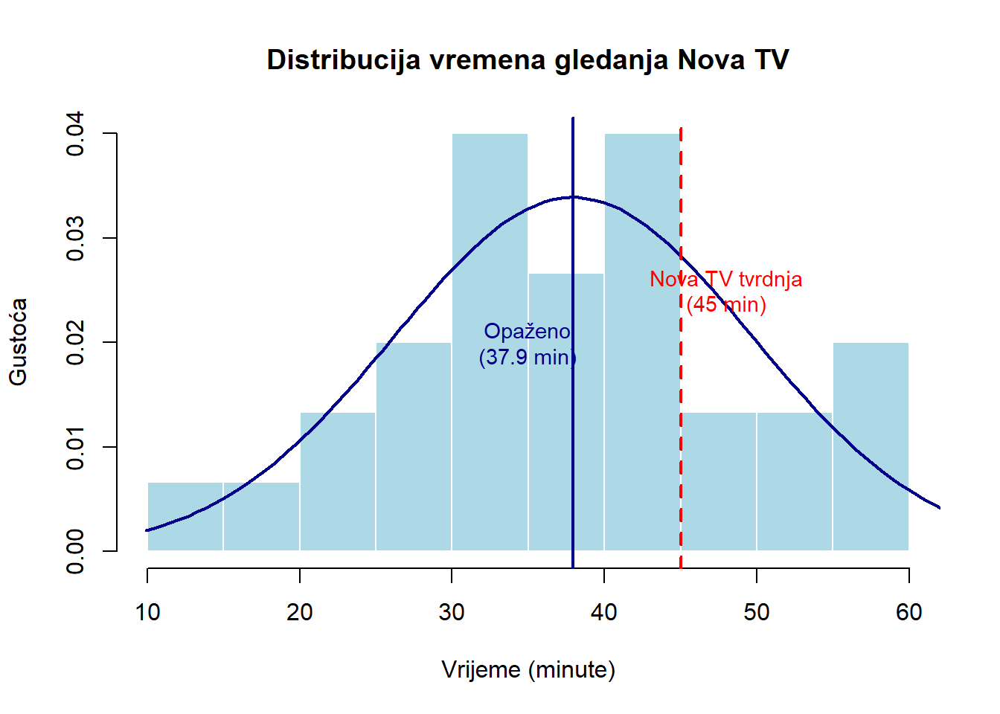

Code
# Simulirani podaci: vrijeme gledanja u minutama
set.seed(123)
vrijeme_gledanja <- rnorm(30, mean = 38.5, sd = 12)
# Deskriptivne statistike
mean_vrijeme <- mean(vrijeme_gledanja)
sd_vrijeme <- sd(vrijeme_gledanja)
n <- length(vrijeme_gledanja)
# T-test
mu0 <- 45 # Nova TV tvrdnja
t_test_rezultat <- t.test(vrijeme_gledanja, mu = mu0)
# Prikaz rezultata
cat("Prosječno vrijeme gledanja:", round(mean_vrijeme, 2), "minuta\n")Prosječno vrijeme gledanja: 37.93 minutaCode
cat("Standardna devijacija:", round(sd_vrijeme, 2), "minuta\n")Standardna devijacija: 11.77 minutaCode
cat("t-statistika:", round(t_test_rezultat$statistic, 3), "\n")t-statistika: -3.287 Code
cat("Stupnjevi slobode:", t_test_rezultat$parameter, "\n")Stupnjevi slobode: 29 Code
cat("P-vrijednost:", format.pval(t_test_rezultat$p.value, digits = 3), "\n")P-vrijednost: 0.00265 Code
cat("95% interval pouzdanosti:",
round(t_test_rezultat$conf.int[1], 2), "do",
round(t_test_rezultat$conf.int[2], 2), "minuta\n")95% interval pouzdanosti: 33.54 do 42.33 minutaCode
# Vizualizacija
hist(vrijeme_gledanja, breaks = 10, probability = TRUE,
main = "Distribucija vremena gledanja Nova TV",
xlab = "Vrijeme (minute)",
ylab = "Gustoća",
col = "lightblue", border = "white")
# Dodavanje krivulje normalne distribucije
x <- seq(min(vrijeme_gledanja) - 5, max(vrijeme_gledanja) + 5, length = 100)
lines(x, dnorm(x, mean = mean_vrijeme, sd = sd_vrijeme),
col = "darkblue", lwd = 2)
# Oznaka za populacijsku tvrdnju
abline(v = mu0, col = "red", lwd = 2, lty = 2)
text(mu0 + 3, 0.025,
"Nova TV tvrdnja\n(45 min)", col = "red", cex = 0.9)
# Oznaka za opaženi prosjek
abline(v = mean_vrijeme, col = "darkblue", lwd = 2)
text(mean_vrijeme - 3, 0.02,
paste("Opaženo\n(", round(mean_vrijeme, 1), " min)", sep = ""),
col = "darkblue", cex = 0.9)
